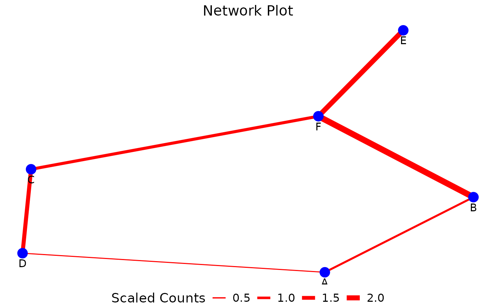

'PlotNetwork()' a function to plot a customizable cell-cell interaction network graph
Usage
PlotNetwork(
network_df,
node_size = 20,
node_color = "blue",
node_text_size = 4,
edge_width_factor = 50,
edge_color = "red",
network_layout = "fr",
legend_title = "Scaled Counts",
legend_position = "bottom",
min_edge_width = 0.5,
max_edge_width = 3,
main = "Network Plot",
main_size = 15,
hjust = 0.5,
legend_text_size = 12,
legend_title_size = 14
)Arguments
- network_df
a data frame containing the network data, ideally the output from the GetNodeDF() function containing the edges, nodes and weights.
- node_size
a numeric value specifying the size of the nodes in the plot (default: 20).
- node_color
a character defining the color of the nodes (default: "blue").
- node_text_size
a numeric value specifying the size of the text labels for nodes (default: 4).
- edge_width_factor
a numeric value specifying the scaling factor applied to edge weights to determine edge width (default: 50).
- edge_color
a character specifying the color of the edges (default: "red").
- network_layout
a character defining the layout algorithm to use for positioning nodes (default: "fr"). Common options include `"fr"` (Fruchterman–Reingold), `"kk"` (Kamada–Kawai), or Large Graph Layout `"lgl"`
- legend_title
a character specifying the title of the legend (default: "Scaled Counts").
- legend_position
a character specifying the position of the plot legend (default: "bottom"). Options include `"bottom"`, `"top"`, `"left"`, `"right"` .
- min_edge_width
a numeric value defining the minimum width of the edges (default: 0.5).
- max_edge_width
a numeric value defining the maximum width of the edges (default: 3).
- main
a character specifying the main title of the plot (default: "Network Plot").
- main_size
a numeric value specifying the text size of the main plot title (default: 15).
- hjust
a numeric value defining the horizontal justification of the main title (default: 0.5, centered).
- legend_text_size
a numeric value specifying the text size of the legend (default: 12).
- legend_title_size
a numeric value specifying the size of the legend title (default: 14).
Examples
my_network_df <- data.frame(Cell1 =c('A', 'B', 'C', 'D', 'E', 'F'),
Cell2= c('D', 'A', 'F', 'C', 'F', 'B'),
n_cells = c(20, 40, 60, 80, 100, 120))
PlotNetwork(network_df = my_network_df)
